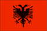
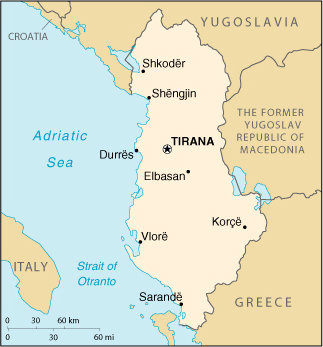

|
Albania |  |
| Introduction Geography People Government Economy Communications Transportation Military Transnational Issues | ||
|  | ||
| Albania | Introduction | Top of Page |
| Background: | In 1990 Albania ended 44 years of xenophobic communist rule and established a multiparty democracy. The transition has proven difficult as corrupt governments have tried to deal with high unemployment, a dilapidated infrastructure, widespread gangsterism, and disruptive political opponents. International observers judged local elections in 2000 to be acceptable and a step toward democratic development, but serious deficiencies remain to be corrected before the the 2001 parliamentary elections. |
| Albania | Geography | Top of Page |
| Location: | Southeastern Europe, bordering the Adriatic Sea and Ionian Sea, between Greece and the Federal Republic of Yugoslavia |
| Geographic coordinates: | 41 00 N, 20 00 E |
| Map references: | Europe |
| Area: |
total:
28,748 sq km
land: 27,398 sq km water: 1,350 sq km |
| Area - comparative: | slightly smaller than Maryland |
| Land boundaries: |
total:
720 km
border countries: Greece 282 km, The Former Yugoslav Republic of Macedonia 151 km, Yugoslavia 287 km |
| Coastline: | 362 km |
| Maritime claims: |
continental shelf:
200-m depth or to the depth of exploitation
territorial sea: 12 NM |
| Climate: | mild temperate; cool, cloudy, wet winters; hot, clear, dry summers; interior is cooler and wetter |
| Terrain: | mostly mountains and hills; small plains along coast |
| Elevation extremes: |
lowest point:
Adriatic Sea 0 m
highest point: Maja e Korabit (Golem Korab) 2,753 m |
| Natural resources: | petroleum, natural gas, coal, chromium, copper, timber, nickel, hydropower |
| Land use: |
arable land:
21%
permanent crops: 5% permanent pastures: 15% forests and woodland: 38% other: 21% (1993 est.) |
| Irrigated land: | 3,410 sq km (1993 est.) |
| Natural hazards: | destructive earthquakes; tsunamis occur along southwestern coast; drought |
| Environment - current issues: | deforestation; soil erosion; water pollution from industrial and domestic effluents |
| Environment - international agreements: |
party to:
Biodiversity, Climate Change, Desertification, Hazardous Wastes, Ozone Layer Protection, Wetlands
signed, but not ratified: none of the selected agreements |
| Geography - note: | strategic location along Strait of Otranto (links Adriatic Sea to Ionian Sea and Mediterranean Sea) |
| Albania | People | Top of Page |
| Population: | 3,510,484 (July 2001 est.) |
| Age structure: |
0-14 years:
29.53% (male 536,495; female 500,026)
15-64 years: 63.48% (male 1,073,351; female 1,155,115) 65 years and over: 6.99% (male 107,476; female 138,021) (2001 est.) |
| Population growth rate: | 0.88% (2001 est.) |
| Birth rate: | 19.01 births/1,000 population (2001 est.) |
| Death rate: | 6.5 deaths/1,000 population (2001 est.) |
| Net migration rate: | -3.69 migrant(s)/1,000 population (2001 est.) |
| Sex ratio: |
at birth:
1.08 male(s)/female
under 15 years: 1.07 male(s)/female 15-64 years: 0.93 male(s)/female 65 years and over: 0.78 male(s)/female total population: 0.96 male(s)/female (2001 est.) |
| Infant mortality rate: | 39.99 deaths/1,000 live births (2001 est.) |
| Life expectancy at birth: |
total population:
71.83 years
male: 69.01 years female: 74.87 years (2001 est.) |
| Total fertility rate: | 2.32 children born/woman (2001 est.) |
| HIV/AIDS - adult prevalence rate: | less than 0.01% (1999 est.) |
| HIV/AIDS - people living with HIV/AIDS: | less than 100 (2000 est.) |
| HIV/AIDS - deaths: | less than 100 (1999 est.) |
| Nationality: |
noun:
Albanian(s)
adjective: Albanian |
| Ethnic groups: |
Albanian 95%, Greeks 3%, other 2% (Vlachs, Gypsies, Serbs, and Bulgarians) (1989 est.)
note: in 1989, other estimates of the Greek population ranged from 1% (official Albanian statistics) to 12% (from a Greek organization) |
| Religions: |
Muslim 70%, Albanian Orthodox 20%, Roman Catholic 10%
note: all mosques and churches were closed in 1967 and religious observances prohibited; in November 1990, Albania began allowing private religious practice |
| Languages: | Albanian (Tosk is the official dialect), Greek |
| Literacy: |
definition:
age 9 and over can read and write
total population: 93% (1997 est.) male: NA% female: NA% |
| Albania | Government | Top of Page |
| Country name: |
conventional long form:
Republic of Albania
conventional short form: Albania local long form: Republika e Shqiperise local short form: Shqiperia former: People's Socialist Republic of Albania |
| Government type: | emerging democracy |
| Capital: | Tirana |
| Administrative divisions: |
36 districts (rrethe, singular - rreth) and 1 municipality* (bashki); Berat, Bulqize, Delvine, Devoll (Bilisht), Diber (Peshkopi), Durres, Elbasan, Fier, Gjirokaster, Gramsh, Has (Krume), Kavaje, Kolonje (Erseke), Korce, Kruje, Kucove, Kukes, Kurbin, Lezhe, Librazhd, Lushnje, Malesi e Madhe (Koplik), Mallakaster (Ballsh), Mat (Burrel), Mirdite (Rreshen), Peqin, Permet, Pogradec, Puke, Sarande, Shkoder, Skrapar (Corovode), Tepelene, Tirane (Tirana), Tirane* (Tirana), Tropoje (Bajram Curri), Vlore
note: administrative divisions have the same names as their administrative centers (exceptions have the administrative center name following in parentheses) |
| Independence: | 28 November 1912 (from Ottoman Empire) |
| National holiday: | Independence Day, 28 November (1912) |
| Constitution: | a new constitution was adopted by popular referendum on 28 November 1998; note - the opposition Democratic Party boycotted the vote |
| Legal system: | has not accepted compulsory ICJ jurisdiction |
| Suffrage: | 18 years of age; universal and compulsory |
| Executive branch: |
chief of state:
President of the Republic Rexhep MEIDANI (since 24 July 1997)
head of government: Prime Minister Ilir META (since 29 October 1999) cabinet: Council of Ministers nominated by the prime minister and approved by the president elections: president elected by the People's Assembly for a five-year term; election last held 24 July 1997 (next to be held NA 2002); prime minister appointed by the president election results: Rexhep MEIDANI elected president; People's Assembly vote by number - total votes 122, for 110, against 3, abstained 2, invalid 7 |
| Legislative branch: |
unicameral People's Assembly or Kuvendi Popullor (155 seats; most members are elected by direct popular vote and some by proportional vote for four-year terms)
elections: last held 29 June 1997 (next held 24 June 2001, 2nd round 8 July 2001) election results: percent of vote by party - PS 53.36%, PD 25.33%, PSD 2.5%, PBDNJ 2.78%, PBK 2.36%, PAD 2.85%, PR 2.25%, PLL 3.09%, PDK 1.00%, PBSD 0.84%; seats by party - PS 101, PD 27, PSD 8, PBDNJ 4, PBK 3, PAD 2, PR 2, PLL 2, PDK 1, PBSD 1, PUK 1, independents 3 |
| Judicial branch: | Supreme Court (chairman is elected by the People's Assembly for a four-year term) |
| Political parties and leaders: | Albanian National Front (Balli Kombetar) or PBK [Abaz ERMENJI]; Albanian Republican Party or PR [Fatmir MEDIU]; Albanian Socialist Party or PS (formerly the Albania Workers Party) [Fatos NANO, chairman]; Christian Democratic Party or PDK [Zef BUSHATI]; Democratic Alliance or PAD [Neritan CEKA]; Democratic Party or PD [Sali BERISHA]; Group of Reformist Democrats [Leonard NDOKA]; Liberal Union Party [Teodor LACO]; note - Teodor LACO of the Liberal Union Party was leader of the Social Democratic Union of Albania or PBSD; Movement of Legality Party or PLL [Nderim KUPI]; OMONIA [Vagjelis DULES]; Party of National Unity or PUK [Idajet BEQUIRI]; Social Democratic Party or PSD [Skender GJINUSHI]; Unity for Human Rights Party or PBDNJ [Vasil MELO, chairman] |
| Political pressure groups and leaders: | NA |
| International organization participation: | ACCT (associate), BSEC, CCC, CE, CEI, EAPC, EBRD, ECE, FAO, IAEA, IBRD, ICAO, ICRM, IDA, IDB, IFAD, IFC, IFRCS, ILO, IMF, IMO, Intelsat (nonsignatory user), Interpol, IOC, IOM, ISO (correspondent), ITU, OIC, OPCW, OSCE, PFP, UN, UNCTAD, UNESCO, UNIDO, UNOMIG, UPU, WFTU, WHO, WIPO, WMO, WToO, WTrO |
| Diplomatic representation in the US: |
chief of mission:
Ambassador Petrit BUSHATI
chancery: 2100 S Street NW, Washington, DC 20008 telephone: [1] (202) 223-4942 FAX: [1] (202) 628-7342 |
| Diplomatic representation from the US: |
chief of mission:
Ambassador Joseph LIMPRECHT
embassy: Rruga Elbasanit Labinoti 103, Tirana mailing address: PSC 59, Box 100(A), APO AE 09624 telephone: [355] (42) 32875, 33520 FAX: [355] (42) 32222 |
| Flag description: | red with a black two-headed eagle in the center |
| Albania | Economy | Top of Page |
| Economy - overview: | Poor by European standards, Albania is making the difficult transition to a more open-market economy. The economy rebounded in 1993-95 after a severe depression accompanying the end of the previous centrally planned system in 1990 and 1991. However, a weakening of government resolve to maintain stabilization policies in the election year of 1996 contributed to renewal of inflationary pressures, spurred by the budget deficit which exceeded 12% of GDP. The collapse of financial pyramid schemes in early 1997 - which had attracted deposits from a substantial portion of Albania's population - triggered severe social unrest which led to more than 1,500 deaths, widespread destruction of property, and a 7% drop in GDP. The government has taken measures to curb violent crime and to revive economic activity and trade. The economy is bolstered by remittances from some 20% of the labor force that works abroad, mostly in Greece and Italy. These remittances supplement GDP and help offset the large foreign trade deficit. Most agricultural land was privatized in 1992, substantially improving peasant incomes. In 1998, Albania recovered the 7% drop in GDP of 1997 and pushed ahead by 8% in 1999 and by 7.5% in 2000. International aid helped defray the high costs of receiving and returning refugees from the Kosovo conflict. Privatization scored some successes in 2000, but other reforms lagged. |
| GDP: | purchasing power parity - $10.5 billion (2000 est.) |
| GDP - real growth rate: | 7.5% (2000 est.) |
| GDP - per capita: | purchasing power parity - $3,000 (2000 est.) |
| GDP - composition by sector: |
agriculture:
55%
industry: 24% services: 21% (2000) |
| Population below poverty line: | 19.6% (1996 est.) |
| Household income or consumption by percentage share: |
lowest 10%:
NA%
highest 10%: NA% |
| Inflation rate (consumer prices): | 1% (2000 est.) |
| Labor force: | 1.692 million (including 352,000 emigrant workers and 261,000 domestically unemployed) (1994 est.) |
| Labor force - by occupation: | agriculture 50%, industry and services 50% |
| Unemployment rate: | 16% (2000 est.) officially; may be as high as 25% |
| Budget: |
revenues:
$393 million
expenditures: $676 million, including capital expenditures of $NA (1997 est.) |
| Industries: | food processing, textiles and clothing; lumber, oil, cement, chemicals, mining, basic metals, hydropower |
| Industrial production growth rate: | 9% (2000 est.) |
| Electricity - production: | 5.332 billion kWh (1999) |
| Electricity - production by source: |
fossil fuel:
3.81%
hydro: 96.19% nuclear: 0% other: 0% (1999) |
| Electricity - consumption: | 5.379 billion kWh (1999) |
| Electricity - exports: | 100 million kWh (1999) |
| Electricity - imports: | 600 million kWh (2000) |
| Agriculture - products: | wheat, corn, potatoes, vegetables, fruits, sugar beets, grapes; meat, dairy products |
| Exports: | $310 million (f.o.b., 2000 est.) |
| Exports - commodities: | textiles and footwear; asphalt, metals and metallic ores, crude oil; vegetables, fruits, tobacco |
| Exports - partners: | Italy 67%, Greece 15%, Germany 5%, Austria 2%, The Former Yugoslav Republic of Macedonia 2% (2000) |
| Imports: | $1 billion (f.o.b., 2000 est.) |
| Imports - commodities: | machinery and equipment, foodstuffs, textiles, chemicals |
| Imports - partners: | Italy 37%, Greece 28%, Turkey 6%, Germany 6%, Bulgaria 3% (2000) |
| Debt - external: | $1 billion (2000) |
| Economic aid - recipient: | $NA; aid for energy from China, Germany, Norway (2000) |
| Currency: | lek (ALL) |
| Currency code: | ALL |
| Exchange rates: | leke per US dollar - 146.08 (December 2000),143.71 (2000) 137.69 (1999), 150.63 (1998), 148.93 (1997), 104.50 (1996); note - leke is the plural of lek |
| Fiscal year: | calendar year |
| Albania | Communications | Top of Page |
| Telephones - main lines in use: | 87,000 (1997) |
| Telephones - mobile cellular: | 3,100 (1999) |
| Telephone system: |
general assessment:
Albania has the poorest telephone service in Europe with fewer than two telephones per 100 inhabitants; it is doubtful that every village has telephone service
domestic: obsolete wire system; no longer provides a telephone for every village; in 1992, following the fall of the communist government, peasants cut the wire to about 1,000 villages and used it to build fences international: inadequate; international traffic carried by microwave radio relay from the Tirana exchange to Italy and Greece |
| Radio broadcast stations: | AM 16, FM 3, shortwave 2 (1999) |
| Radios: | 810,000 (1997) |
| Television broadcast stations: | 9 (plus 264 repeaters) (1995) |
| Televisions: | 405,000 (1997) |
| Internet country code: | .al |
| Internet Service Providers (ISPs): | 7 (2000) |
| Internet users: | 2,500 (2000) |
| Albania | Transportation | Top of Page |
| Railways: |
total:
447 km
standard gauge: 447 km 1.435-m gauge (2001) |
| Highways: |
total:
18,000 km
paved: 5,400 km unpaved: 12,600 km (1998 est.) |
| Waterways: |
43 km
note: includes Albanian sections of Lake Scutari, Lake Ohrid, and Lake Prespa (1990) |
| Pipelines: | crude oil 145 km; petroleum products 55 km; natural gas 64 km (1991) |
| Ports and harbors: | Durres, Sarande, Shengjin, Vlore |
| Merchant marine: |
total:
9 ships (1,000 GRT or over) totaling 17,797 GRT/26,324 DWT
ships by type: cargo 9 (2000 est.) |
| Airports: | 11 (2000 est.) |
| Airports - with paved runways: |
total:
3
2,438 to 3,047 m: 3 (2000 est.) |
| Airports - with unpaved runways: |
total:
8
over 3,047 m: 1 1,524 to 2,437 m: 1 914 to 1,523 m: 2 under 914 m: 4 (2000 est.) |
| Heliports: | 1 (2000 est.) |
| Albania | Military | Top of Page |
| Military branches: | Army, Navy, Air and Air Defense Forces, Interior Ministry Troops, Border Guards |
| Military manpower - military age: | 19 years of age |
| Military manpower - availability: | males age 15-49: 870,768 (2001 est.) |
| Military manpower - fit for military service: | males age 15-49: 712,763 (2001 est.) |
| Military manpower - reaching military age annually: | males: 35,792 (2001 est.) |
| Military expenditures - dollar figure: | $42 million (FY99) |
| Military expenditures - percent of GDP: | 1.5% (FY99) |
| Albania | Transnational Issues | Top of Page |
| Disputes - international: | the Albanian Government supports protection of the rights of ethnic Albanians outside of its borders but has downplayed them to further its primary foreign policy goal of regional cooperation; Albanian majority in Kosovo seeks independence from Yugoslavia; Albanians in The Former Yugoslav Republic of Macedonia claim discrimination in education, access to public-sector jobs, and representation in government |
| Illicit drugs: | increasingly active transshipment point for Southwest Asian opiates, hashish, and cannabis transiting the Balkan route and - to a far lesser extent - cocaine from South America destined for Western Europe; limited opium and cannabis production; ethnic Albanian narcotrafficking organizations active and rapidly expanding in Europe |
{kind=link}
{kind=link}